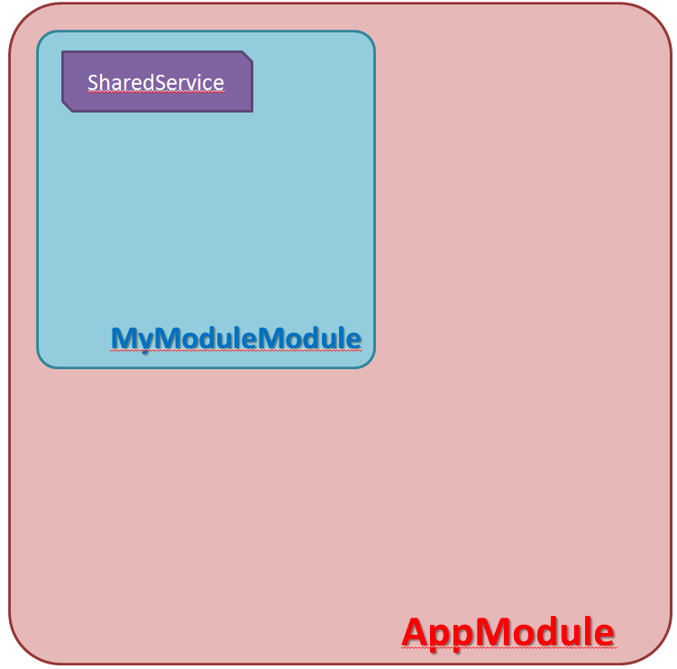

same-level-pass-val works!
- 參考：https://blog.johnwu.cc/article/angular-4-services.html
- 參考：https://www.itdaan.com/tw/648c564a025d8c810f5bf84ee5dca17b
說明
- (1) 建立module : ng g m myModule (此步非必要)
- (2) 建立共享資料的service : ng g s shared
- (3) 在 app.module.ts 中，import 這個自訂 MyModuleModule
- (4) 撰寫 SharedService
- (5) 在 CompAComponent 及 CompBComponent 中注入 SharedService
- (6) 在 CompAComponent 中 click 時，將要傳遞的資料存入 SharedService
- (7) 在 CompBComponent 中，ngOnInit時 subscribe SharedService 的 Observable物件
- (8) 在 CompBComponent 中，因為訂閱，所以會即時根據A傳給B的值進行變化
- 示意圖 